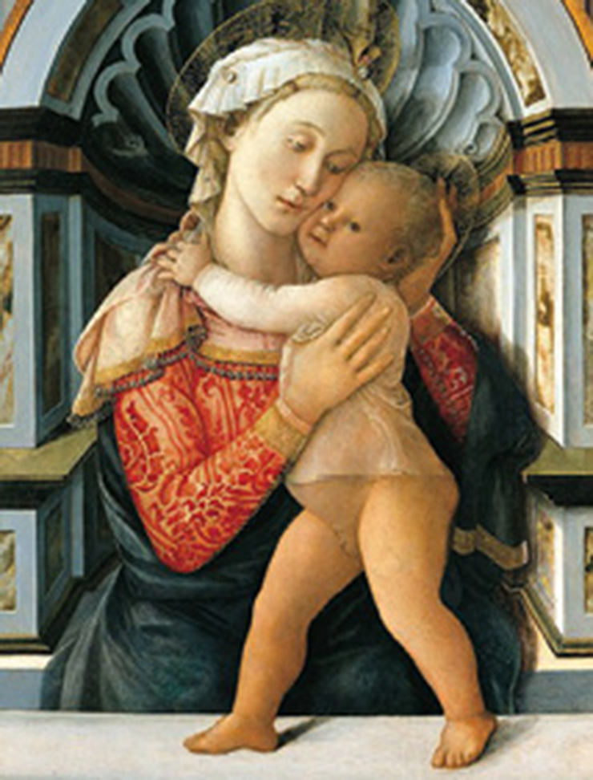
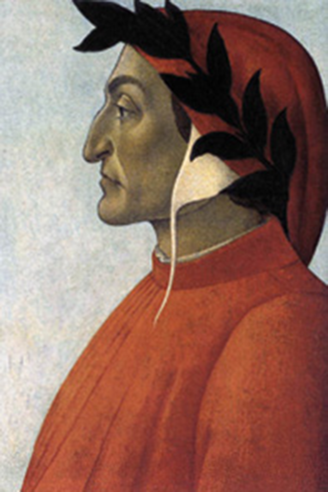
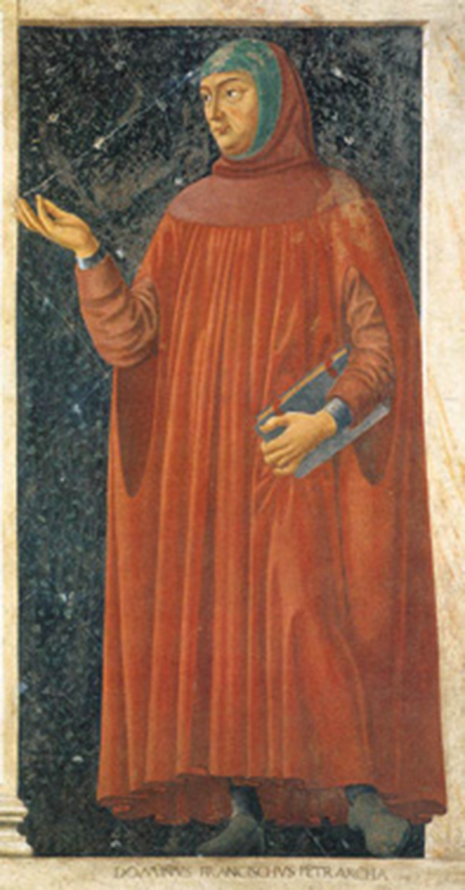

SANZIO, Rafael. A escola de Atenas (detalhe), c. 1508-11. Afresco. Stanza della Segnatura, Palácio Pontifício, Vaticano.
Na Europa do século XVI, dá-se início a uma nova era, conhecida como Renascimento, marcada pelo desenvolvimento do mercantilismo intercontinental e pelas rupturas com o poder político da Igreja Católica Romana. Iniciada no final do século XV, a cultura renascentista revela uma geração de pessoas (sobretudo nobres e cortesãos) conscientes de seu poder de atuação efetiva no mundo terreno, que surge para fazer jus aos seus interesses econômicos. E é a Reforma Protestante que põe em xeque o poder papal – ainda que esse poder tenha se mantido forte na Península Ibérica, onde estavam as grandes potências das navegações. Com o impulso dessas mudanças, há uma guinada para fora dos modelos culturais medievais, que se reflete na retomada dos modelos estéticos da filosofia da antiguidade greco-romana, o que dá o nome de Classicismo ao período. Os valores lógico-racionais “renascidos” serão ora reinventados ora ressignificados pelos classicistas, cuja nova medida para compreender o mundo é o ser humano, e não mais Deus. Isso lança toda a cultura palaciana e aristocrática do período a um reencontro com as ciências matemáticas e naturais, com as artes plásticas e esculturais (baseadas em princípios geométricos), e, claro, há uma retomada da literatura dramática, lírica e épica clássicas. Estas serão magistralmente reinventadas pelo português Luís Vaz de Camões.
- Você conhece esse afresco feito pelo artista Rafael Sanzio? Faça uma breve pesquisa e responda: O que foi a Escola de Atenas? Quais eram os principais filósofos desse período da Grécia Antiga? Eles estão retratados no afresco?
- Os homens do Renascimento opunham-se à Idade Média, período também conhecido como Idade das Trevas. Você sabe qual a razão desse nome?
- A passagem da Idade Média para a Idade Moderna é marcada por uma crescente ambição humana. Como as inovações científicas contribuíram para o estabelecimento dessa nova realidade?
Neste capítulo, serão abordadas as habilidades EM13LP46, EM13LP48, EM13LP49, EM13LP50, EM13LP52.
Amor é um fogo que arde sem se ver;
é ferida que dói, e não se sente;
é um contentamento descontente;
é dor que desatina sem doer;
É um não querer mais que bem querer;
é solitário andar por entre a gente;
é nunca contentar-se de contente;
é cuidar que se ganha em se perder;
É querer estar preso por vontade;
é servir a quem vence, o vencedor;
é ter com quem nos mata lealdade.
Mas como causar pode seu favor
nos corações humanos amizade,
se tão contrário a si é o mesmo Amor?
CAMÕES, Luís Vaz de. Sonetos [livro eletrônico].Lisboa: Atlântico Press, 2012.
- Ao ler o poema, é possível identificar sentimentos particulares do poeta? Comente.
- Esse poema é considerado um soneto, estruturado em dois quartetos (estrofe de quatro versos) e dois tercetos (estrofe de três versos). Releia o primeiro terceto e responda: de que forma é possível identificar, nele, a postura trovadoresca típica das cantigas de amor?
- O poema inicia-se e termina com a mesma palavra: amor. O primeiro verso traz uma afirmativa; o último, no entanto, traz uma frase interrogativa. O que isso pode representar?
Amor: entre a poesia e a razão
No soneto “Amor é um fogo que arde sem se ver”, Camões apresenta uma definição poética de amor e, para isso, justapõe ideias opostas, contrastantes – como nos versos “ferida que dói, e não se sente”, “dor que desatina sem doer” –, mas que, na verdade, se completam na busca de uma conceituação de tão complexo sentimento, já que “tão contrário a si é o mesmo amor”.
O tema “amor” figura na literatura desde as cantigas de amor medievais, nas quais os trovadores já revelavam seu sofrimento – a coita amorosa –, que os deixava desorientados diante de uma relação intangível. Esse sentimento foi interpretado de diferentes maneiras por poetas e filósofos.
O poeta Francesco Petrarca, um dos precursores do Renascimento italiano, reafirmou o conceito de que o amor é uma aspiração que engrandece o homem e apura seu espírito, não devendo consumar-se sob o risco de extinguir-se, isto é, não devendo concretizar-se fisicamente, podendo desaparecer. Camões, entretanto, procura interpretá-lo de forma racional. Para ele, o Amor – escrito assim, com inicial maiúscula, para personificar o sentimento – é perfeito e puro, próprio do espírito, e muito distante da imperfeição humana.
O amor físico e terreno (assim, designado com letra minúscula) é incompleto e não passa de uma cópia imperfeita do primeiro, em que detalhes sublimes foram deturpados pelo ser humano. A essa concepção damos o nome de neoplatonismo – de modo geral, uma doutrina que prega a possibilidade de que o ser humano, em um movimento de conhecimento interior, retorne às suas origens e restabeleça a união com o divino. O neoplatonismo, portanto, retoma os princípios defendidos pelo filósofo Platão e os mescla a dogmas cristãos.
Observe que, nesse poema, o sentimento amoroso não é abordado pelo poeta de maneira individualizada, mas sim em sentido amplo, um sentimento que pode atingir a todos.
Construído por um raciocínio lógico, complexo e universal, esse soneto de Camões revela um sentido profundo, o qual culmina na interrogação do último verso, incitando o leitor à reflexão: como pode alguém desejar um sentimento que nos provoca tanto prazer e dor ao mesmo tempo? Para o eu lírico, chega a ser algo indecifrável.
Classicismo e contexto histórico-social do Renascimento
No século XV, volta-se a atenção para os estudos da Antiguidade greco-romana, época em que deuses pagãos eram cultuados e havia grande valorização das coisas terrenas, como a força física e a capacidade intelectual. O orgulho de si mesmo é retomado, e uma postura mais reflexiva e racional de enxergar o mundo se revela.
Com o surgimento das cidades, o desenvolvimento do comércio e a emergência da burguesia, a Igreja acabou perdendo seu poder para nobres e comerciantes abastados (ricos). Não bastasse isso, a Igreja Católica ainda sofreu com a Reforma Protestante, iniciada por Martinho Lutero (1483-1546), diminuindo consideravelmente sua influência em todas as áreas, inclusive a cultural.
O homem passou a adotar um comportamento extremamente racional. A conquista dos mares durante a expansão marítima reforçou a confiança dos indivíduos em si mesmos e a possibilidade de ampliação dos lucros; além disso, a ascensão social fomentou a evolução das ciências.
Como resultado, surgiram as primeiras universidades, cuja finalidade era organizar o conhecimento e difundi-lo pelas classes dominantes. O advento da imprensa, por sua vez, permitiu a maior circulação de obras literárias e filosóficas, decorrente da facilidade trazida pela imprensa móvel. Tal invenção contribuiu para a ampliação da comunidade de leitores, universalizando o conhecimento.
As transformações sociais ocorridas com o enriquecimento das cidades possibilitaram o surgimento de novos artistas: filhos de burgueses e pequenos comerciantes (diferentemente dos trovadores, que eram nobres, em geral) que passaram a produzir sob a proteção de mercadores ricos e influentes, os mecenas. Esses poderosos comerciantes investiam na produção de arte como maneira de obter reconhecimento e prestígio na sociedade, encomendando retratos dos nobres e de burgueses enriquecidos. Assim, a cultura passa a ser valorizada pelos novos ricos, que, por meio dela, querem ser valorizados pela nobreza.
As artes, por sua vez, deveriam buscar inspiração no mundo das ideias, uma dimensão perfeita na qual impera o equilíbrio, resultando em obras harmônicas e bem planejadas. A busca pela perfeição torna-se um ideal comum.
Os temas bíblicos ainda dividiam posição com os temas profanos, mas as figuras não eram mais retratadas como magras e altas; pelo contrário, apresentavam formas mais arredondadas, com abundância – reflexo da riqueza e abastança do período. Com a técnica da perspectiva, os objetos puderam ser representados de modo mais fiel, próximo do olhar humano, com a forte ilusão da realidade, característica da pintura renascentista.
Nas duas obras a seguir, observe como o mesmo tema é representado de forma diferente em cada um dos períodos.
... a Reforma Protestante constituiu um processo de ruptura com a Igreja Católica. O principal agente desse movimento religioso foi o teólogo alemão Martinho Lutero, que, em 1517, publicou 95 teses que criticavam veementemente ações da Igreja, como a venda de indulgências (perdão divino concedido somente por meio de pagamento em dinheiro ou bens de valor).
Tal ruptura abalou o domínio católico na Europa Ocidental e permitiu o surgimento de ramificações do cristianismo, como o luteranismo (primeira religião protestante).
BUONINSEGNA, Duccio di. A madona e o menino, c. 1290--1300. Têmpera e ouro sobre madeira. The Metropolitan Museum of Art, Nova York.
The Metropolitan Museum of Art, Nova York
LIPPI, Filippo. Madona com menino, 1466-9. Óleo sobre madeira. Palazzo Medici Riccardi, Florença.
Palazzo Medici Riccardi, Florença
Enquanto na obra de Duccio di Buoninsegna as personagens são representadas por figuras austeras, magras e longilíneas, na obra de Filippo Lippi, elas revelam um semblante leve, são mais curvilíneas e o ambiente ao redor – cercado de incrustações em mármore – sugere riqueza e abundância.
Tais aspectos permitem-nos entender por que o Renascimento foi uma época de grandes transformações nos âmbitos econômico, político, social e cultural.
Preocupação com a forma: a medida nova e o dolce stil nuovo
A literatura renascentista portuguesa teve forte influência de artistas italianos, os primeiros a se lançarem nos estudos dos modelos clássicos da Antiguidade. Foram eles que criaram um novo formato de poema: estruturado em 14 versos decassílabos, distribuídos em dois quartetos e dois tercetos – o qual se nomeou soneto. Nessa estrutura, as duas primeiras estrofes apresentam o desenvolvimento do tema e as duas últimas, sua conclusão – uma tentativa de conciliar razão e emoção (aparentemente conflitantes). Observe como isso ocorre no poema de Camões que abre este capítulo. Seus versos decassílabos estão distribuídos exatamente desse modo.
Tal métrica passou a ser chamada de medida nova, em oposição às redondilhas maiores (sete sílabas) e menores (cinco sílabas), abundantes no Trovadorismo e que passaram a ser denominadas de medida velha pelos renascentistas.
Os poetas italianos Dante Alighieri (1265-1321) e Francesco Petrarca (1304-1374) foram os maiores destaques dessa nova maneira de escrever poesia.
BOTTICELLI, Sandro. Retrato de Dante Alighieri, século XV. Óleo sobre tela. Coleção particular.
Coleção particular
CASTAGNO, Andrea del. Francesco Petrarca, c. 1450. Afresco sobre tela. Galeria Uffizi, Florença.
Galeria Uffizi, Florença
Petrarca nutria preferência por um modelo que apresentasse uma sequência fixa de rimas, seguindo o padrão ABBA/ABBA/CDC/DCD.
Em seus livros Os triunfos e Cancioneiro, trabalha exclusivamente sonetos, com figuras de linguagem rebuscadas. Apesar de Petrarca discordar do conceito de amor trovadoresco, ele retrata a mulher de maneira idealizada.
A medida nova foi levada a Portugal pelo poeta Sá de Miranda, considerado o pai do Classicismo português. Confira um de seus sonetos e observe como a temática amorosa é abordada pelo poeta.
Desarrezoado amor, dentro em meu peito,
tem guerra com a razão. Amor, que jaz
i já de muitos dias, manda e faz
tudo o que quer, a torto e a direito.
Não espera razões, tudo é despeito,
tudo soberba e força; faz, desfaz,
sem respeito nenhum; e quando em paz
cuidais que sois, então tudo é desfeito.
Doutra parte, a Razão tempos espia,
espia ocasiões de tarde em tarde,
que ajunta o tempo; enfim vem o seu dia:
Então não tem lugar certo onde aguarde
Amor; trata traições, que não confia
nem dos seus. Que farei quando tudo ardearde?
MIRANDA, Francisco de Sá de. In: BERARDINELLI, Cleonice (Org.). Cinco séculos de sonetos portugueses: de Camões a Fernando Pessoa. Rio de Janeiro: Casa da Palavra, 2013.
Observe a retomada do tema amor: o eu lírico luta contra o sentimento que insiste em instalar-se e não consegue lidar com ele ou compreendê-lo por meio da razão. Veja que, assim como Camões, Sá de Miranda mostra que é impossível compreender o sentimento amoroso pela racionalidade.
Vale ressaltar que, para os classicistas, o mundo das ideias é o ideal humano; desse modo, ao propor uma rígida estrutura métrica, sintática e rítmica, os sonetos revelam ser frutos de um raciocínio elaborado, retrato do mundo lógico pretendido pelo espírito humano.
O estilo classicista
Ao deslocar o homem para o centro do mundo, os textos do período passam a contemplar os seguintes elementos:
Inspiração nos clássicos
Os escritores renascentistas procuravam atingir os resultados obtidos pelos artistas da Antiguidade Clássica: ordem, regularidade, perfeição formal, equilíbrio e harmonia. Ao retomar a mitologia greco-romana, aproximam a vida terrena do universo divino. Vale ressaltar que os escritores não voltaram, de fato, a acreditar na mitologia, mas a usar as imagens mitológicas e as narrativas interessantes, reformulando as ideias segundo os temas da época e os valores cristãos em discussão.
Universalismo
A conquista de novos territórios possibilita a ampliação da visão de mundo. Com isso, temas e interpretações particulares cedem lugar a assuntos que possam ser universalmente discutidos. Temas como o Amor, a Beleza, o Bem, o Mal, a Verdade, entre outros, devem ser tratados sob uma perspectiva mais ampla e universal. As tramas palacianas e os temas cotidianos são deixados de lado.
Racionalismo
Os escritores buscam conter as emoções, privilegiando a razão; assim, trabalham conceitos lógicos mais do que sentimentos. O senso crítico, a desconfiança em relação aos dogmas, o desejo de provocar a reflexão no leitor e a construção de textos de forma racional e elaborada – seja na temática, seja na forma – são itens essenciais aos artistas da época. Nesse conceito, toma lugar a visão antropocêntrica.
Luís Vaz de Camões, o maior poeta do Classicismo português
Camões tem uma biografia pontilhada de lacunas: é provável que tenha nascido em 1524 e frequentado a Universidade de Coimbra, mas não se sabe ao certo. Extremamente culto, conheceu, ao menos, três continentes.
Camões foi preso por agredir um guarda do palácio real e, em troca de perdão, prestou serviços militares no norte da África, onde, ao ser ferido em combate, perdeu o olho direito. Desafeto do rei, foi exilado nas colônias da África e da Ásia por 17 anos, retornando sem posses a Portugal. Durante seu exílio, escreveu Os Lusíadas, sua grande obra épica. Morreu em 1580, no mesmo ano em que sua pátria caía sob jugo espanhol.
A dualidade na lírica de Camões
Um texto é classificado como lírico quando nele se destaca a expressão plena do eu lírico, ou seja, a projeção de seu universo interior, expondo sentimentos e emoções. Uma das principais temáticas nesse gênero é o amor, com suas dores e seus prazeres, a perplexidade diante de fatos sociais, a impotência diante da morte.
A poesia lírica de Camões pode ser dividida em duas vertentes: a lírica amorosa e a lírica filosófica. Em ambas as esferas, os poemas são compostos de dois modelos distintos: poemas tradicionais no formato medieval – escritos em redondilhas, que lembram as cantigas, contemplando diálogos com elementos da natureza – e poemas que se encaixam no estilo novo, à moda clássica.
A lírica amorosa
Camões sofre forte influência do neoplatonismo. Segundo o filósofo Platão, o espírito, preso ao mundo sensível e imperfeito em que habita nosso corpo terreno, guarda lembranças da Perfeição e da Beleza soberanas, residentes no mundo inteligível, o das ideias puras e perfeitas, e anseia por elas. Antes de tornar-se prisioneiro em um corpo, o espírito habitava o mundo das ideias; ao “cair” no mundo terreno, ele busca por esse mundo ideal. No entanto, as paixões terrenas o desviam de sua busca, o que faz com que apenas a parte racional do homem seja nobre.
Assim, admirar a beleza física ou aquela presente na natureza terrestre resume-se a uma contemplação parcial, incompleta e imperfeita, já que elas são apenas um reflexo da Suprema Beleza. Desse modo, o amor platônico, concepção muito presente na lírica de Camões, é a renúncia aos prazeres físicos e circunstanciais e a elevação sublime da alma em direção à Beleza e ao Amor supremos.
A influência dessa corrente é observável em muitas das obras de Camões, principalmente no que diz respeito ao conceito de amor.
Leia o soneto a seguir:
Busque Amor novas artes, novo engenho,
para matar-me, e novas esquivanças;
que não pode tirar-me as esperanças,
pois mal me tirará o que eu não tenho.
Olhai de que esperanças me mantenho!
Vede que perigosas seguranças!
Que não temo contrastes nem mudanças,
andando em bravo mar, perdido o lenho.
Mas, com quanto não pode haver desgosto
onde esperança falta, lá me esconde
Amor um mal, que mata e não se vê.
Que dias há que n’alma me tem posto
um não sei quê, que nasce não sei onde,
vem não sei como; e dói não sei porquê.
CAMÕES, Luís Vaz de. Obras de Luís de Camões. Lisboa: Imprensa Nacional, 1861. v. 2. p. 8.
Nesse soneto, composto na medida nova, descreve-se o amor como uma força poderosa, que faz sofrer e é capaz de matar. Entretanto, o eu lírico declara-se alheio ao perigo, pois, se não há esperanças de ver concretizado o amor, por que temer? (“que não pode tirar-me as esperanças, / pois mal me tirará o que eu não tenho”).
Na segunda estrofe, ele reforça a indiferença que sente pelo Amor, alegando não ter medo de mudanças, e, apesar disso, reconhece que dentro dele se esconde um poder maléfico, impossível de definir ou compreender (“dói não sei porquê”).
Diante da impossibilidade de concretizar o amor e não se deixar “matar” por ele, estabelece-se um conflito entre a sensualidade e a espiritualidade, causando sofrimento e melancolia ao eu lírico.
Nesse soneto, também é possível identificar a presença de diferentes figuras de linguagem – uma das marcas de estilo camoniano.
- Personificação. Camões escreve a palavra Amor com letra maiúscula, como se tratasse de um substantivo próprio.
- Metáfora. Uso da expressão “bravo mar” para representar sua “vida agitada”, e “lenho perdido” para representar sua vida sem rumo.
- Metonímia. Uso da palavra “lenho” para referir-se a “navio”.
- Paradoxo. Como em “mal me tirará o que eu não tenho” e “perigosas seguranças”, que revelam contradições intensas.
A lírica filosófica
Os poemas camonianos de cunho filosófico tratam de temas que promovem a reflexão sobre a vida, o homem e o mundo. Em muitas composições, percebe-se a visão de um eu lírico perplexo diante do desconcerto, das contradições do mundo; em outras, destaca-se o desengano diante da instabilidade e da transitoriedade da vida. Confira no soneto a seguir algumas dessas características:
Ao desconcerto do mundo
Os bons vi sempre passar
No mundo graves tormentos;
E para mais m’espantar,
Os maos vi sempre nadar
Em mar de contentamentos.
Cuidando alcançar assi
O bem tão mal ordenado,
Fui mao; mas fui castigado.
Assi, que só para mi
Anda o mundo concertado.
CAMÕES, Luís Vaz de. Obras Completas de Luís de Camões.Paris: Livraria Europea de Baudry, 1843. Tomo II. p. 79.
No poema, estruturado na medida velha (redondilha maior) e em estrofe única, o eu lírico demonstra perplexidade diante da constatação de que pessoas boas passam por dificuldades constantes, enquanto as “más” se dão bem na vida, revelando o desconcerto do mundo em premiar quem é mau e castigar quem pratica o bem.
... Platão, Sócrates e Aristóteles romperam com os pensadores de sua época, que acreditavam que os fundamentos da natureza poderiam ser explicados por meio do estudo de um elemento físico primordial. Chamados de filósofos metafísicos, os três passaram a buscar os fundamentos da realidade em um mundo além dos sentidos, percebidos apenas pela razão. Assim, a metafísica visa o conhecimento do princípio das coisas e, justamente por ter um valor em si mesma, não dependendo de resultados práticos, é superior a todas as outras.
No neoplatonismo, o amor é alheio a interesses, considerado um “amor ideal”. É por meio da intervenção divina que o amor material se transforma em amor espiritual, com a superação dos vícios mundanos.
Nos últimos três versos, o eu lírico relata que tentou ser mau, em busca do tal “mar de contentamentos”, e acabou sendo castigado – quer pela sua consciência, quer por outras pessoas, quer pela falta de sorte –, ao contrário do que esperava, sugerindo que, para ele, a regra não se aplicava: “Assi, que só para mi / Anda o mundo concertado”.
Observe, agora, como a fugacidade das coisas é abordada no soneto a seguir:
Mudam-se os tempos, mudam-se as vontades,
muda-se o ser, muda-se a confiança;
todo o mundo é composto de mudança,
tomando sempre novas qualidades.
Continuamente vemos novidades,
diferentes em tudo da esperança;
do mal ficam as mágoas na lembrança,
e do bem (se algum houve), as saudades.
O tempo cobre o chão de verde manto,
que já coberto foi de neve fria, e, enfim,
converte em choro o doce canto.
E, afora este mudar se cada dia,
outra mudança faz de mor espanto,
que não se muda já como soía.
CAMÕES, Luís Vaz de. Obras Completas de Luís de Camões. Paris: Livraria Europea de Baudry, 1843. Tomo I. p. 29.
Nesse poema, o eu lírico enxerga a realidade como fruto de um destino imprevisível e incerto, revelando a fugacidade de todas as coisas: “Todo o mundo é composto de mudança, / tomando sempre novas qualidades”. A postura adotada diante das mudanças é pessimista, como se constata na segunda estrofe: “Continuamente vemos novidades, / diferentes em tudo da esperança”, e a própria mudança do inverno para a primavera – geralmente associada a uma mudança bem-vinda – é triste para o eu lírico. O último terceto revela a perplexidade diante de transformações tão constantes e irracionais, pois nem as próprias mudanças seguem um padrão constante.
No Classicismo, os poetas reviveram a ideia de Platão de que o amor deve ser sublime, elevado e espiritual. Hoje, observamos a veiculação de um conceito diferente de amor: o desejo carnal é amplamente explorado em filmes, telenovelas, nas letras explícitas de determinadas canções.
Escreva um parágrafo dissertativo-argumentativo que aborde fatores que dificultam a concepção de amor platônico nos dias atuais. Não se esqueça de situar o leitor, fazendo uma alusão ao conceito de platonismo.
Texto para as questões 1 e 2.
Alma minha gentil, que te partiste
tão cedo desta vida descontente,
repousa lá no Céu eternamente
e viva eu cá na terra sempre triste.
Se lá no assento etéreo, onde subiste,
memória desta vida se consente,
não te esqueças daquele amor ardente
que já nos olhos meus tão puro viste.
E se vires que pode merecer te
Algua causa a dor que me ficou
da mágoa, sem remédio, de perder te,
roga a Deus, que teus anos encurtou,
que tão cedo de cá me leve a ver te,
quão cedo de meus olhos te levou.
CAMÕES, Luís Vaz de. Obras Completas de Luís de Camões. Paris: Livraria Europea de Baudry, 1843. Tomo I. p. 10.
1
Há quem afirme que esse poema foi feito por Camões em homenagem a Dinamene, jovem asiática com quem teria se envolvido e que morreu em um naufrágio, quando estava em sua companhia. A primeira estrofe revela fortes oposições (antíteses) em relação ao lugar e à condição de cada um dos amantes.
Há quem afirme que esse poema foi feito por Camões em homenagem a Dinamene, jovem asiática com quem teria se envolvido e que morreu em um naufrágio, quando estava em sua companhia. A primeira estrofe revela fortes oposições (antíteses) em relação ao lugar e à condição de cada um dos amantes.
2
O poema também emprega eufemismo, isto é, o uso de expressões para atenuar o que de fato se pretende dizer.
- Grife, no texto, alguns exemplos que confirmem essa afirmação.
- Que efeito de sentido é alcançado com o emprego dessa figura de linguagem?
3
Unicamp-SP 2018
- Grife, no texto, alguns exemplos que confirmem essa afirmação.
- Que efeito de sentido é alcançado com o emprego dessa figura de linguagem?
Transforma-se o amador na coisa amada,
Por virtude do muito imaginar;
Não tenho, logo, mais que desejar,
Pois em mim tenho a parte desejada.
Se nela está minha alma transformada,
Que mais deseja o corpo de alcançar?
Em si somente pode descansar,
Pois com ele tal alma está liada.
Mas esta linda e pura semideia,
Que, como o acidente em seu sujeito,
Assim como a alma minha se conforma,
Está no pensamento como ideia;
E o vivo e puro amor de que sou feito,
Como a matéria simples busca a forma.
(Luís de Camões, Lírica: redondilhas e sonetos, Rio de Janeiro: Ediouro / São Paulo: Publifolha, 1997, p. 85.)
Um dos aspectos mais importantes da lírica de Camões é a retomada renascentista de ideias do filósofo grego Platão. Considerando o soneto citado, pode-se dizer que o chamado “neoplatonismo” camoniano
- é afirmado nos dois primeiros quartetos, uma vez que a união entre amador e pessoa amada resulta em uma alma única e perfeita.
- é confirmado nos dois últimos tercetos, uma vez que a beleza e a pureza reúnem-se finalmente na matéria simples que deseja.
- é negado nos dois primeiros quartetos, uma vez que a consequência da união entre amador e coisa amada é a ausência de desejo.
- é contrariado nos dois últimos tercetos, uma vez que a pureza e a beleza mantêm-se em harmonia na sua condição de ideia.
Texto para as questões 1 a 3.
Leia o soneto do poeta Luís Vaz de Camões (1525?--1580):
Sete anos de pastor Jacob servia
Labão, pai de Raquel, serrana bela;
mas não servia ao pai, servia a ela,
e a ela só por prêmio pretendia.
Os dias, na esperança de um só dia,
passava, contentando-se com vê-la;
porém o pai, usando de cautela,
em lugar de Raquel lhe dava Lia.
Vendo o triste pastor que com enganos
lhe fora assi negada a sua pastora,
como se a não tivera merecida,
começa de servir outros sete anos,
dizendo: “Mais servira, se não fora
para tão longo amor tão curta a vida”.
Luís Vaz de Camões. Sonetos, 2001.
1
Unifesp 2016 Uma das principais figuras exploradas por Camões em sua poesia é a antítese. Neste soneto, tal figura ocorre no verso:
- “mas não servia ao pai, servia a ela,”
- “passava, contentando-se com vê-la;”
- “para tão longo amor tão curta a vida.”
- “porém o pai, usando de cautela,”
- “lhe fora assi negada a sua pastora,”
2
Unifesp 2016 Do ponto de vista formal, o tipo de verso e o esquema de rimas que caracterizam este soneto camoniano são, respectivamente,
- dodecassílabo e ABAB ABAB ABC ABC.
- decassílabo e ABAB ABAB CDC DCD.
- heptassílabo e ABBA ABBA CDE CDE.
- decassílabo e ABBA ABBA CDE CDE.
- dodecassílabo e ABBA ABBA CDE CDE.
3
Unifesp 2016 De acordo com a história narrada pelo soneto,
- Labão engana Jacob, entregando-lhe a filha Lia, em vez de Raquel.
- Labão aceita ceder Lia a Jacob, se este lhe entregar Raquel.
- Labão obriga Jacob a trabalhar mais sete anos para obter o amor de Lia.
- Jacob descumpre o acordo feito com Labão, negando-lhe a filha Raquel.
- Jacob morre antes de completar os sete anos de trabalho, não obtendo o amor de Raquel.
4
Unicamp-SP 2016 Leia o soneto a seguir, de Luís de Camões:
Cá nesta Babilônia, donde mana
matéria a quanto mal o mundo cria;
cá donde o puro Amor não tem valia,
que a Mãe, que manda mais, tudo profana;
cá, onde o mal se afina e o bem se dana,
e pode mais que a honra a tirania;
cá, onde a errada e cega Monarquia
cuida que um nome vão a desengana;
cá, neste labirinto, onde a nobreza,
com esforço e saber pedindo vão
às portas da cobiça e da vileza;
cá neste escuro caos de confusão,
cumprindo o curso estou da natureza.
Vê se me esquecerei de ti, Sião!
(Disponível em: http:/www.dominiopublico.gov.br/download/texto/bv000164.pdf. Acessado em 08/09/2015.)
- Uma oposição espacial configura o tema e o significado desse poema de Camões. Identifique essa oposição, indicando o seu significado para o conjunto dos versos.
- Identifique nos tercetos duas expressões que contemplam a noção de desconcerto, fundamental para a compreensão do tema do soneto e da lírica camoniana.
5
Mackenzie Assinale a alternativa correta sobre Camões.
- Além de usar metros mais populares, utilizou-se da medida nova, especialmente nas redondilhas que recriam, poeticamente, um quadro harmônico da vida e do mundo.
- O tema do desconcerto do mundo é um dos aspectos característicos de sua poesia, presente, por exemplo, nos sonetos de inspiração petrarquiana.
- Introduziu o estilo cultista em Portugal, em 1580, explorando antíteses e paradoxos nos poemas de temática religiosa.
- Autor mais representativo da poesia medieval portuguesa, produziu, além de sonetos satíricos, a obra épica Os lusíadas.
- Influenciado pelo Humanismo português, aderiu ao cânone clássico de composição poética, afastando-se, porém, das inovações métricas e dos modelos greco-romanos.